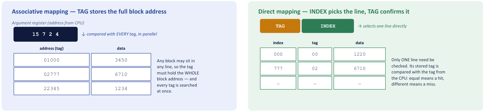
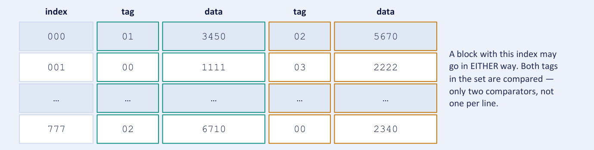
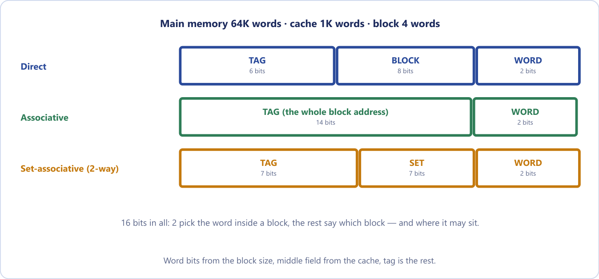
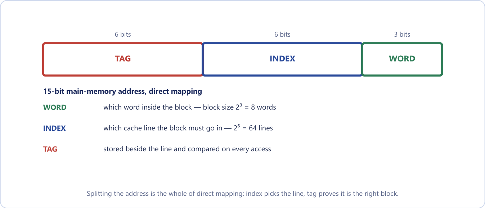
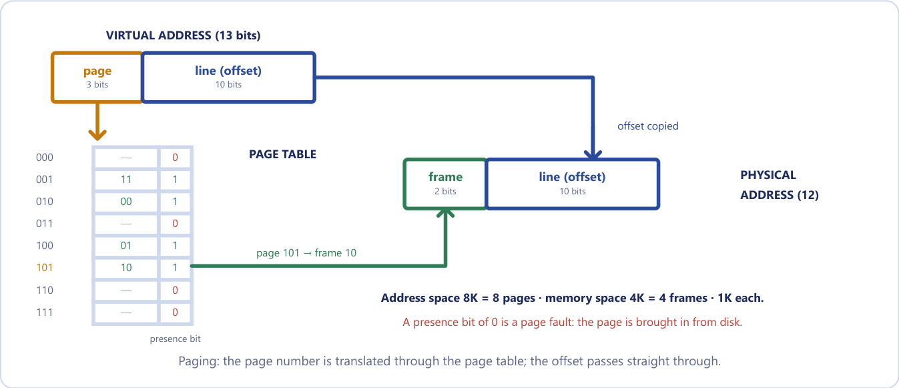

Chapter 19: Cache Memory and Virtual Memory¶
A small fast memory that answers almost every request, and the same idea applied one level down to the disk
The last chapter ended with a puzzle. A level of the memory hierarchy that is a thousand times smaller than the one below it should be able to answer only a thousandth of the requests, yet real caches answer nine requests in ten, or better. The resolution is that programs do not read memory at random. They keep coming back to the same few addresses, and a small, fast memory placed between the CPU and main memory can hold nearly all of what is being used at any moment.
This chapter studies that small memory, the cache. We define locality of reference, then measure a cache with two numbers: the hit ratio and the average access time. We meet a different kind of memory, the associative memory, which is searched by content rather than by address and is the hardware behind cache tags. Then comes the central question of cache design, where in the cache may a block of main memory be placed?, to which direct, associative and set-associative mapping give three different answers, each of which fixes how an address is split into fields. We learn the routine for splitting an address, trace a tiny cache by hand, and look at write policies and replacement algorithms. We end by applying exactly the same ideas one level further down, between main memory and the disk, where they are called virtual memory.
What you will learn
- Define temporal and spatial locality and explain why they make a small cache effective.
- Compute hit ratio and average access time, and decide whether a faster memory or a better hit ratio helps more.
- Describe an associative (content-addressable) memory and use the argument and key registers.
- Compare direct, associative and set-associative mapping, and split an address into tag, index and word fields for each.
- Trace a small cache by hand, naming compulsory, capacity and conflict misses.
- Compare write-through with write-back, and FIFO, LRU and random replacement.
- Explain paging, the page table, page faults and page replacement, and translate a virtual address to a physical one.
19.1 Locality of reference¶
A cache is a small, very fast memory (SRAM) placed between the CPU and main memory. It holds copies of the most recently used, and most likely to be used, blocks of main memory, so that most CPU accesses are served at cache speed. Its effectiveness rests entirely on locality of reference: analysis of programs shows that, over a short interval, references to memory tend to be confined to a few localised areas.
There are two kinds of locality.
- Temporal locality. A location referenced now is likely to be referenced again soon. The instructions of a loop and a loop counter are the standard examples.
- Spatial locality. Locations near a referenced address are likely to be referenced soon. Sequential instructions and consecutive array elements are the standard examples.
Spatial locality is the reason a cache fetches a whole block (also called a line) around a missed word rather than the single word. The expensive part of a memory access is getting started, so bringing the neighbours costs almost nothing extra and turns the next several accesses into hits.
When the CPU asks for a word, the cache is searched first. If the word is there, it is a hit and the word is returned at cache speed. If it is not, it is a miss: the block containing the word is copied up from main memory (replacing an existing block if necessary) and the CPU is then served. Think of a cook's kitchen counter. You do not run to the pantry for every pinch of an ingredient; you bring what you are using right now onto the counter beside the stove. The counter is tiny compared with the pantry, yet it holds almost everything each step needs, because cooking has locality.
Locality in a loop over an array
Summing an array, for i: s = s + a[i], shows both kinds at once. The loop instructions and the variables s and i are reused on every iteration (temporal locality). The array elements a[0], a[1], a[2], ... are consecutive in memory, so fetching one block brings the next several elements with it (spatial locality). After the first miss on each block, the following accesses hit.
Locality is a property of the program, not of the hardware. A program that scans a huge array in a truly random order gains almost nothing from a larger cache, because there is no locality for the cache to exploit.
19.2 Hit ratio and average access time¶
Two numbers describe how well a cache is working. The hit ratio \(h\) is the fraction of references found in the cache, \(h = \text{hits}/(\text{hits} + \text{misses})\), and the miss ratio is \(1 - h\). If the cache access time is \(t_c\) and the main-memory access time is \(t_m\) (the miss penalty), the average access time is
A high hit ratio pushes \(t_{avg}\) towards \(t_c\). Real caches achieve hit ratios between 0.90 and 0.99, precisely because of locality.
Two conventions for a miss
Some books charge a miss for both memories, since the cache is looked in first and fails: \(t_{avg} = h\,t_c + (1 - h)(t_c + t_m)\). With \(t_c = 10\) ns, \(t_m = 100\) ns and \(h = 0.9\) this gives \(9 + 0.1 \times 110 = 20\) ns instead of 19 ns. Both are accepted, but state in one line which you are using. This book uses the first form.
Example 19.1: Hit ratio and average access time
Problem. A cache has access time 10 ns and the main memory 100 ns. Over a program run, 950 of every 1000 references are hits. Find (a) the hit ratio and (b) the average access time, and (c) the speed-up over having no cache.
Solution. (a) \(h = 950/1000 = 0.95\).
(b) \(t_{avg} = 0.95 \times 10 + 0.05 \times 100 = 9.5 + 5.0 = 14.5\) ns.
(c) Without a cache every access costs 100 ns, so the speed-up is \(100/14.5 = 6.9\). At \(h = 0.90\) the average would be 19 ns, and at \(h = 0.99\) only 10.9 ns.
Answer. \(h = 0.95\); average access time 14.5 ns; speed-up 6.9.
A hit ratio of 0.9 does not mean we lose only 10 per cent
The formula tells a harsher story. Because a miss can cost ten times a hit, a "small" 10 per cent of misses can dominate the average. At \(h = 0.90\) with 10 ns and 100 ns, the hits contribute \(0.9 \times 10 = 9\) ns while the misses contribute \(0.1 \times 100 = 10\) ns: the misses cost more than the hits, although they are one access in ten. The last few percent of hit ratio matter enormously, which is why architects fight so hard for them.
The same formula tells a designer where to spend effort. Suppose a system has \(t_c = 8\) ns, \(t_m = 80\) ns and \(h = 0.90\), and only one change can be afforded.
Example 19.2: Faster memory or better hit ratio?
Problem. A cache system has \(t_c = 8\) ns, \(t_m = 80\) ns and \(h = 0.90\). A designer can afford exactly one change: (A) a new memory chip cutting \(t_m\) to 60 ns, or (B) a smarter replacement policy raising \(h\) to 0.95. Compute the average access time in each case and recommend one.
Solution.
| Case | Calculation | \(t_{avg}\) |
|---|---|---|
| Baseline | \(0.90 \times 8 + 0.10 \times 80 = 7.2 + 8.0\) | 15.2 ns |
| A: faster memory | \(0.90 \times 8 + 0.10 \times 60 = 7.2 + 6.0\) | 13.2 ns |
| B: better hit ratio | \(0.95 \times 8 + 0.05 \times 80 = 7.6 + 4.0\) | 11.6 ns |
Answer. Choose B. Option A only trims the cost of each miss; option B attacks the number of expensive misses, halving the miss rate from 0.10 to 0.05 and removing whole miss penalties from the average. When one event is far more expensive than another, it is usually worth more to make it rarer than to make it slightly cheaper.
With the 10 ns and 100 ns figures of Example 19.1 and \(h = 0.9\) the same comparison reads: halving \(t_m\) to 50 ns gives \(9 + 5 = 14\) ns, raising \(h\) to 0.95 gives 14.5 ns. The two are almost equal, but five percentage points of hit ratio is far cheaper than a memory twice as fast. A variant that offers (A) \(t_m = 70\) ns, or (B) \(h = 0.95\) gives 16 ns against 14.5 ns, and again B wins.
Example 19.3: What hit ratio is needed?
Problem. (a) \(t_c = 4\) ns and \(t_m = 50\) ns: what hit ratio gives an average of 8 ns? (b) \(t_c = 8\) ns and \(t_m = 80\) ns: what hit ratio brings the average below 10 ns? (c) \(t_c = 10\) ns and \(t_m = 100\) ns: what hit ratio gives 15 ns?
Solution. Solve \(h\,t_c + (1-h)\,t_m = t_{avg}\) for \(h\).
(a) \(4h + 50(1 - h) = 8\), so \(50 - 46h = 8\) and \(h = 42/46 = 0.913\).
(b) \(8h + 80(1 - h) < 10\), so \(80 - 72h < 10\) and \(h > 70/72 = 0.972\).
(c) \(10h + 100(1 - h) = 15\), so \(100 - 90h = 15\) and \(h = 85/90 = 0.944\).
Answer. (a) 0.913, (b) more than 0.972, (c) 0.944. Shaving a few nanoseconds off the average costs more than a few points of hit ratio, because every miss is ten times as expensive as a hit.
Example 19.4: A whole program run, and a falling hit ratio
Problem. A program makes 1000 memory references and 950 hit the cache, with \(t_c = 5\) ns and \(t_m = 60\) ns. Find the hit ratio, the average access time and the total access time. Then, for \(t_c = 5\) ns and \(t_m = 50\) ns, compare \(h = 0.95\) with \(h = 0.80\).
Solution. \(h = 0.95\). \(t_{avg} = 0.95 \times 5 + 0.05 \times 60 = 4.75 + 3.00 = 7.75\) ns. Total time \(= 1000 \times 7.75 = 7750\) ns.
With \(t_m = 50\) ns: at \(h = 0.95\), \(t_{avg} = 4.75 + 2.50 = 7.25\) ns, a speed-up of \(50/7.25 = 6.90\) over no cache. At \(h = 0.80\), \(t_{avg} = 4.00 + 10.00 = 14.0\) ns.
Answer. 0.95, 7.75 ns, 7750 ns. A fall of fifteen points in hit ratio nearly doubles the average access time, from 7.25 ns to 14.0 ns.
19.3 Associative memory¶
An ordinary memory is searched by address: you supply a location number and receive the word stored there. An associative memory, or content-addressable memory (CAM), is searched by content: you supply a value, every stored word is compared with it simultaneously, in parallel, and every word that matches is flagged. It is the hardware that makes a fast tag search possible in a cache and a fast translation possible in virtual memory.
Three registers control the search.
- The argument register \(A\) holds the value being searched for.
- The key register \(K\) is a mask: only the bit positions where \(K = 1\) take part in the comparison; positions where \(K = 0\) are ignored.
- The match register \(M\) has one bit per word, and \(M_i = 1\) if word \(i\) matches \(A\) in all the unmasked positions.
For one word \(F_i\), bit \(j\) of \(A\) equals bit \(j\) of the word when \(x_j = A_jF_{ij} + A_j'F_{ij}' = 1\). Word \(i\) matches if every unmasked bit position agrees, so
A masked bit (\(K_j = 0\)) makes its factor equal to 1 whatever the data, so it cannot cause a mismatch.
Example 19.5: Matching with a mask
Problem. (a) \(A = 101\,111100\) and \(K = 111\,000000\) (compare only the three leftmost bits). Word 1 is \(100\,111100\) and word 2 is \(101\,000001\). Which match? (b) An associative memory stores \(W_1 = 1011\,0010\), \(W_2 = 1110\,0101\) and \(W_3 = 1011\,1111\). The argument is \(A = 1011\,0111\). Which words match if \(K = 1111\,0000\), and what changes if \(K = 1111\,1111\)?
Solution. (a) Only the leftmost three bits are compared, so we compare \(101\) with each. Word 1 begins \(100\): no match. Word 2 begins \(101\): match.
(b) With \(K = 1111\,0000\) only the left four bits count, so we compare \(1011\). \(W_1 = 1011\,\ldots\) matches; \(W_2 = 1110\,\ldots\) does not; \(W_3 = 1011\,\ldots\) matches. So \(M = 101\). With \(K = 1111\,1111\) all eight bits must equal \(1011\,0111\). \(W_1\) differs in bits 2 and 0 (\(0010\) against \(0111\)), \(W_3\) differs in bit 3 (\(1111\) against \(0111\)), and \(W_2\) differs too. So \(M = 000\).
Answer. (a) Word 2 only. (b) \(M = 101\) (words 1 and 3 match) for \(K = 11110000\); \(M = 000\) (no match) for \(K = 11111111\).
Because every cell needs its own comparison logic, associative memory is far more expensive than ordinary RAM. It is used only where search speed is essential: the tag store of an associative cache, and the page table of virtual memory, where recent translations are kept in a small associative translation look-aside buffer.
19.4 Cache mapping¶
The transformation of data from main memory to cache is called mapping. The mapping answers one question: where in the cache may a given block of main memory be placed, and how is it found again? The CPU address is split into fields, and the split depends on the answer. There are three schemes.
Direct mapping. Each main-memory block may go in exactly one cache line, given by (block number) mod (number of lines). The address splits into three fields: TAG, INDEX (which line) and WORD (which word inside the block). Only one line need be checked: its stored tag is compared with the tag of the address, and equal means a hit. It is simple and cheap, but two blocks that map to the same line evict each other even when the rest of the cache is empty, which is called a conflict miss.
Associative (fully associative) mapping. A block may go in any line. The cache is built from associative memory that stores both the block address (the tag) and the data, and searches every tag in parallel. The address has only two fields, TAG, which holds the whole block address, and WORD. It gives the best hit ratio, but one comparator per line is needed: a 1024-line cache would need 1024 comparators, which is why fully associative caches are built only very small.
Set-associative mapping. The cache is divided into sets of \(k\) lines each (\(k\)-way set-associative). A block maps to one set, given by (block number) mod (number of sets), and may occupy any of the \(k\) lines in that set. The address fields are TAG, SET INDEX and WORD. Only \(k\) comparisons are needed, so it gives most of the hit-ratio benefit of associative mapping at a fraction of the cost, and it is what real caches use.

Figure 19.1 shows the first two schemes. In the associative cache, each stored word holds a full address (the tag) beside its data, and the address from the CPU is compared with every stored address at once. In the direct-mapped cache, taken from Mano's example, the CPU address is divided into an index and a tag. For instance, the main-memory address 02777 (octal) has index 777 and tag 02. The cache word at index 777 holds tag 02 and data 6710, so the tags agree and the access is a hit with data 6710. A different address with the same index but a different tag, such as 01777, would find the tag 02 there and miss.

Figure 19.2 shows a two-way set-associative cache. Each index addresses a set of two lines, each with its own tag and data, and both tags are compared in parallel, so only two comparators are needed instead of one per line. Mano's example with 512 cache words stores two tag-data pairs per index word, \(6 + 12 + 6 + 12 = 36\) bits per word, with 6-bit tags and 12-bit data.
| Mapping | Where a block may go | Tags compared | Merit and drawback |
|---|---|---|---|
| Direct | exactly one line: \(j \bmod\) (number of lines) | 1 | simplest and cheapest; conflict misses |
| Associative | any line | all lines, in parallel | best hit ratio; expensive associative memory |
| \(k\)-way set-associative | any of the \(k\) lines of set \(j \bmod\) (number of sets) | \(k\) | a compromise; most of the hit ratio at a fraction of the cost |
Table 19.1. The three mapping schemes.
Parking a car is a good picture of these three. A fully associative cache is an open car park: you may park in any free space, but to find your car again a valet must check every space. Direct mapping is an assigned bay: you go straight to your numbered spot, but if a colleague has the same number, one of you is always bumped, even with the park half empty. Set-associative mapping is a permit for a small zone of, say, four bays: quick to search, and a clash no longer evicts you as long as any of the four is free.
The three schemes are one scheme¶
Direct mapping is the case \(k = 1\) (one line per set). Fully associative mapping is the case where there is a single set that contains every line. Everything real lies in between: 2-way, 4-way, 8-way. Increasing \(k\) improves the hit ratio with diminishing returns, because the conflict misses of direct mapping come from a handful of blocks fighting over one line. Give each set four places and almost all of those fights disappear, whereas going to 8 or 16 ways buys very little more, while the comparator cost grows linearly.
Comparing the mappings in an answer
Answer on three axes: where a block may go, how many tags must be compared, and the hardware cost. Then note that set-associative mapping is the practical compromise.
19.5 Splitting the address¶
The same short routine splits an address for every scheme. The only thing that changes is the middle field. Work from the bottom up.
The routine for splitting an address
- Address bits \(A = \log_2(\text{main-memory size})\).
- Word (offset) bits \(w = \log_2(\text{block size})\). This is the same for all three mappings.
- Middle field. Number of cache lines \(=\) cache size \(/\) block size. Direct: index bits \(= \log_2(\text{lines})\). \(k\)-way: number of sets \(=\) lines \(/ k\), set bits \(= \log_2(\text{sets})\). Associative: there is no middle field.
- Tag \(=\) whatever is left, \(A - (\text{middle}) - w\). Check that the fields add up to \(A\).
The word field is the low bits of the address, the index is the middle bits, and the tag is the high bits. Convert the address to binary and slice from the right, never from the left.
Common mistakes in splitting
The middle field answers "where in the cache may it go?", so it always comes from the cache's geometry, never from the size of main memory. Use the number of cache blocks, not the number of cache words (a 1K-word cache with 4-word blocks has 256 blocks and an 8-bit index, not 10). Offset bits are the logarithm of the block size in bytes, not the number of blocks. And do not forget to divide by \(k\) for a set-associative cache.
Example 19.6: Address split for two mappings
Problem. A system has a 32-bit byte address, a block size of 16 bytes and a cache of 16 KB. Show the tag, index and word split for (a) direct mapping and (b) 4-way set-associative mapping.
Solution. Block \(= 16\) B \(= 2^4\), so WORD \(= 4\) bits. Lines \(= 16\text{ KB}/16\text{ B} = 1024 = 2^{10}\).
(a) Direct: INDEX \(= 10\), TAG \(= 32 - 10 - 4 = 18\).
(b) 4-way: sets \(= 1024/4 = 256 = 2^8\), so INDEX \(= 8\) and TAG \(= 32 - 8 - 4 = 20\).
| Mapping | TAG | INDEX | WORD |
|---|---|---|---|
| Direct | 18 | 10 | 4 |
| 4-way set-associative | 20 | 8 | 4 |
Answer. Direct: 18 / 10 / 4 bits. 4-way: 20 / 8 / 4 bits.
Notice what happened between (a) and (b). For a fixed cache size, increasing the associativity makes the number of sets go down, so the index field shrinks by one bit for every doubling of \(k\) and the tag field grows by one bit; the word field never moves, because it depends only on the block size. Students often keep the index the same and get the tag width wrong.
Example 19.7: Reverse split: which line does an address hit?
Problem. A direct-mapped cache has 256 lines and a block size of 8 bytes on a system with 16-bit byte addresses. (a) Give the field widths. (b) For address 2B3C, find the word offset, the cache line and the tag.
Solution. (a) Block \(8 = 2^3\), so WORD \(= 3\). Lines \(256 = 2^8\), so INDEX \(= 8\). TAG \(= 16 - 8 - 3 = 5\).
(b) 2B3C \(= 0010\,1011\,0011\,1100\). WORD is the low 3 bits, 100 \(= 4\). INDEX is the next 8 bits, 0110 0111 \(= 103\). TAG is the top 5 bits, 00101 \(= 5\).
Check by rebuilding the address: $5 \times 2048 + 103 \times 8 + 4 = 10240 + 824 + 4 = 11068 = $ 2B3C.
Answer. Fields 5 / 8 / 3; word offset 4, line 103, tag 5.
Figure 19.3 shows the three splits side by side for a main memory of 64K words, a cache of 1K words and a block of 4 words, which is the standard exam question.

Example 19.8: Split the address for all three mappings
Problem. For a main memory of 64K words, a cache of 1K words and a block size of 4 words, give the address split for direct, associative and 2-way set-associative mapping.
Solution. \(64K = 2^{16}\), so the address has 16 bits. Block \(= 4 = 2^2\), so the word field is 2 bits. Cache lines \(= 1K/4 = 256 = 2^8\).
- Direct. Index (block) field \(= 8\) bits; TAG \(= 16 - 8 - 2 = 6\). Fields TAG 6 / BLOCK 8 / WORD 2; check \(6 + 8 + 2 = 16\).
- Associative. No line field, since a block may sit anywhere, so the tag must identify the block uniquely among all \(2^{16}/4 = 2^{14}\) blocks of memory: TAG 14 / WORD 2.
- 2-way set-associative. Sets \(= 256/2 = 128 = 2^7\), so SET \(= 7\) bits and TAG \(= 16 - 7 - 2 = 7\): TAG 7 / SET 7 / WORD 2; check \(7 + 7 + 2 = 16\). Halving the number of addressable groups moved exactly one bit from the set field into the tag.
Answer. Direct 6 / 8 / 2; associative 14 / 2; 2-way 7 / 7 / 2.
Example 19.9: A larger memory, and a four-way cache
Problem. Main memory is 1M words, the cache is 4K words and the block is 8 words. Give the address fields for direct, associative and 4-way set-associative mapping.
Solution. \(1M = 2^{20}\), so the address is 20 bits. Word field: \(8 = 2^3\), so 3 bits. Cache blocks \(= 4K/8 = 512 = 2^9\).
Direct: TAG \(= 20 - 9 - 3 = 8\), so 8 / 9 / 3. Associative: TAG \(= 20 - 3 = 17\), so 17 / 3. 4-way: sets \(= 512/4 = 128 = 2^7\), TAG \(= 20 - 7 - 3 = 10\), so 10 / 7 / 3.
Answer. Direct 8 | 9 | 3; associative 17 | 3; 4-way 10 | 7 | 3.
Example 19.10: Byte-addressable machine with a small cache
Problem. A byte-addressable computer has 64 KB of main memory and a cache of 2 KB with a block size of 16 bytes. Show the address fields for (i) direct, (ii) associative and (iii) four-way set-associative mapping, and the number of lines or sets in each case.
Solution. \(64\text{ KB} = 2^{16}\), so 16 address bits. Block \(16 = 2^4\): 4 word bits. Lines \(= 2048/16 = 128 = 2^7\).
(i) Direct: 128 lines, so LINE \(= 7\) bits and TAG \(= 16 - 7 - 4 = 5\): 5 / 7 / 4.
(ii) Associative: no line field, so TAG \(= 16 - 4 = 12\): 12 / 4.
(iii) 4-way: sets \(= 128/4 = 32 = 2^5\), so SET \(= 5\) bits and TAG \(= 16 - 5 - 4 = 7\): 7 / 5 / 4.
Answer. Direct 5 / 7 / 4 (128 lines); associative 12 / 4; 4-way 7 / 5 / 4 (32 sets). In each case the fields add up to 16. The more freedom a block has about where it may sit, the larger the tag that must be stored and compared.
Mano's own example uses a main memory of 32K words (a 15-bit address), a cache of 512 words and 12-bit data words. In the associative form the cache stores the whole 15-bit address with the 12-bit data. In the direct form, with one word per block, the address splits into TAG 6 and INDEX 9, and each cache word stores a 6-bit tag and 12 bits of data. If each block holds eight words, the nine index bits split into BLOCK 6 and WORD 3: the address is TAG 6 / BLOCK 6 / WORD 3, there are \(512/8 = 64\) blocks, and all eight words of a block share one tag. Figure 19.4 shows this last split.

Example 19.11: A tutorial-style split with two mappings
Problem. A byte-addressable computer has 1 MB of main memory and a 16 KB cache with 32-byte blocks. Give the fields for direct mapping and for two-way set-associative mapping, and the number of comparators needed in each.
Solution. \(1\text{ MB} = 2^{20}\), so 20 address bits. Block \(32 = 2^5\): WORD \(= 5\). Lines \(= 16384/32 = 512 = 2^9\).
Direct: INDEX \(= 9\) and TAG \(= 20 - 9 - 5 = 6\). Two-way: sets \(= 512/2 = 256 = 2^8\), so SET \(= 8\) and TAG \(= 20 - 8 - 5 = 7\).
The direct-mapped cache compares one tag per access. In the two-way cache the tags of both lines in the chosen set must be compared at the same instant, so two comparators are needed. That is the price of the extra freedom: the tag has grown by a bit and the comparator hardware has doubled, in exchange for two places a block may go instead of one.
Answer. Direct: 6 / 9 / 5 with 1 comparator. Two-way: 7 / 8 / 5 with 2 comparators, 256 sets.
19.6 A tiny cache, by hand¶
The best way to understand mapping is to trace a very small cache. Draw a small table with one column per cache line. For each reference compute the line number, look at what is there, write hit or miss, and update the table. Never try to do it in your head.
Example 19.12: Direct-mapped trace
Problem. A direct-mapped cache has 4 lines and a block size of 1 word. The CPU references the word addresses 0, 1, 2, 0, 4, 0, 5, 2 in that order. Using line \(=\) address mod 4, mark each reference as a hit or a miss and give the final hit ratio.
Solution.
| Reference | Line | Result | What happens |
|---|---|---|---|
| 0 | 0 | miss | loads 0 |
| 1 | 1 | miss | loads 1 |
| 2 | 2 | miss | loads 2 |
| 0 | 0 | hit | still there |
| 4 | 0 | miss | evicts 0 (same line) |
| 0 | 0 | miss | evicts 4 |
| 5 | 1 | miss | evicts 1 |
| 2 | 2 | hit | untouched |
Answer. 2 hits in 8 references, a hit ratio of 0.25.
Addresses 0 and 4 both map to line 0, because \(0 \bmod 4 = 4 \bmod 4 = 0\). Alternating between them evicts one to load the other every single time, which is called thrashing, even though line 3 was never used at all. A hit ratio of 0.25 is not a scandal for such a short run. Eight references are far too few for locality to pay off: every first touch of a block is necessarily a miss (a compulsory miss). Real hit ratios of 0.95 and more come from long runs in which blocks are reused many times after being loaded once.
Example 19.13: The same references, two-way set-associative
Problem. Repeat Example 19.12 for a 2-way set-associative cache with 4 lines (so 2 sets), using LRU replacement and set \(=\) address mod 2.
Solution. Even addresses go to set 0, odd addresses to set 1; each set holds two blocks. We list each set's contents after the reference, least recently used first.
| Reference | Set | Result | Set contents afterwards |
|---|---|---|---|
| 0 | 0 | miss | set 0: [0] |
| 1 | 1 | miss | set 1: [1] |
| 2 | 0 | miss | set 0: [0, 2] |
| 0 | 0 | hit | set 0: [2, 0] |
| 4 | 0 | miss, evicts 2 (LRU) | set 0: [0, 4] |
| 0 | 0 | hit | set 0: [4, 0] |
| 5 | 1 | miss | set 1: [1, 5] |
| 2 | 0 | miss, evicts 4 (LRU) | set 0: [0, 2] |
Answer. 2 hits in 8 references, a hit ratio of 0.25: the same as the direct-mapped cache.
This is a useful surprise. Associativity did not help here, because three different blocks (0, 2 and 4) compete for the two places in set 0. Associativity helps only when the number of blocks competing for a set does not exceed the number of ways. (A simulation of this trace with FIFO instead of LRU gives only one hit.) A better illustration of what associativity can do comes from a reference string in which two blocks share a set.
Example 19.14: Conflict misses and how a second way removes them
Problem. A cache has 4 lines, initially empty. The block references are 0, 4, 0, 4, 1, 5, 1, 0. Show hit or miss for each reference and the hit ratio, with (i) direct mapping and (ii) 2-way set-associative mapping with LRU.
Solution. (i) Direct, line \(=\) block mod 4. Blocks 0 and 4 share line 0 and blocks 1 and 5 share line 1, so each reference evicts the other block: 0 miss, 4 miss (evicts 0), 0 miss (evicts 4), 4 miss, 1 miss, 5 miss (evicts 1), 1 miss, and finally 0 finds line 0 holding 4: miss. Every reference misses.
(ii) 2-way, set \(=\) block mod 2, two lines per set: 0 miss [0]; 4 miss [0, 4]; 0 hit; 4 hit; 1 miss in set 1 [1]; 5 miss [1, 5]; 1 hit; 0 hit (set 0 still holds both 0 and 4).
Answer. (i) 0 hits, hit ratio 0. (ii) 4 hits, hit ratio 0.5. Same cache size, very different hit ratio: that is what conflict misses cost.
Example 19.15: Predict the behaviour
Problem. A direct-mapped cache has 4 lines, one word per block, line \(=\) block mod 4. Starting empty, the CPU issues block addresses 0, 1, 2, 0, 4, 0, 4, 0. Mark each as hit or miss, give the hit ratio, and name the phenomenon with blocks 0 and 4.
Solution. 0 (line 0) miss; 1 (line 1) miss; 2 (line 2) miss; 0 hit; 4 (line 0) miss, evicts 0; 0 miss, evicts 4; 4 miss, evicts 0; 0 miss, evicts 4. One hit and seven misses.
Answer. Hit ratio \(1/8 = 0.125\). Blocks 0 and 4 map to the same line and keep evicting each other: conflict misses (thrashing). A set-associative or fully associative cache would avoid it.
Misses are therefore of three kinds, sometimes called the three C's.
- Compulsory misses are the first access to a block; no cache can avoid them.
- Capacity misses occur when the cache is too small to hold the program's working set.
- Conflict misses occur when too many blocks map to one line or set; they exist only in direct and set-associative caches, and more associativity reduces them.
Check your hand traces with the simulator. It uses a cache of eight blocks and word addresses; choose the block size and the mapping, give it an address trace, and step through the references. Each miss is classed as compulsory, conflict or capacity.
19.7 Write policies¶
A read changes nothing, but a write must keep the cache and main memory consistent. There are two policies.
Write-through. Every write updates main memory immediately, and the cache too if it holds the word. Memory is always consistent, which matters whenever something else reads main memory directly, such as a DMA controller or another processor. The price is heavy memory traffic: every write runs at memory speed.
Write-back (also called copy-back or late write). A write updates only the cache and sets the block's update bit, called the dirty bit. Main memory is updated only when the block is replaced, and then only if the dirty bit is set. Memory traffic is far lower, but main memory is temporarily stale, and the logic is more complex; this is also where cache-coherence problems begin.
Write-back works like a scratch pad: you jot changes on the pad (the cache) and copy them into the permanent ledger (memory) only when you are about to tear the page off. The dirty bit is the little reminder "must copy this out". If the page was never edited it can be discarded instantly, with no write-back, which is why a clean eviction is cheaper than a dirty one, and why a write-back cache writes a block out on eviction only if the dirty bit is set: if the line was never written, the memory copy is already identical, and writing it would be wasted traffic.
| Write-through | Write-back | |
|---|---|---|
| On a write | cache and memory | cache only, dirty bit set |
| Memory update | immediate | on eviction |
| Dirty bit needed | no | yes |
| Memory traffic | high | low |
| Consistency | always | deferred |
Table 19.2. Write policies.
Why write-through in a multiprocessor?
In a multiprocessor where several caches may hold the same block, write-through keeps main memory most consistent, because memory is never stale. It gives the simplest coherence. The same reason makes write-through required whenever a DMA controller reads memory directly: stale memory would be read as if it were correct.
19.8 Replacement algorithms¶
When a block must be loaded into a full set (or a full associative cache), a replacement algorithm chooses the victim.
- FIFO (first in, first out) evicts the block that has been in the cache longest.
- LRU (least recently used) evicts the block that has not been used for the longest time. It exploits temporal locality and usually gives the best hit ratio, but needs usage tracking (age bits).
- LFU (least frequently used) evicts the block used least often.
- Random evicts a randomly chosen line. It is the simplest hardware and is surprisingly competitive.
Replacement exists only where a block could go in several places. In direct mapping the incoming block has exactly one home, so there is no choice and no replacement algorithm is needed: whatever is in that line is evicted. This is why replacement is discussed only for associative and set-associative caches.
Why does LRU usually beat FIFO, given that FIFO also throws out "old" blocks? FIFO measures age since a block arrived; LRU measures age since it was last used. A loop counter loaded long ago but used every iteration is "old" to FIFO and gets evicted foolishly, while LRU keeps it. Recency of use predicts re-use, which is exactly the property a cache is trying to exploit.
Example 19.16: LRU against FIFO
Problem. A 2-way set-associative cache with 4 lines (2 sets, set \(=\) block mod 2) receives the block references 0, 1, 2, 0, 4, 0, 4, 0. Count hits under LRU and under FIFO.
Solution. Only set 0 has trouble: blocks 0, 2 and 4 compete for two places.
- References 0, 1, 2 are three compulsory misses. Set 0 holds 0 and 2.
- The fourth reference, 0, hits under both policies. Under LRU set 0 is now ordered [2, 0] (2 is least recently used); under FIFO it is ordered [0, 2] (0 arrived first).
- Reference 4 misses and must evict. LRU evicts 2, leaving [0, 4]. FIFO evicts 0, the oldest arrival, leaving [2, 4].
- Reference 0: under LRU it is still there (hit); under FIFO it was just evicted (miss, evicting 2).
- References 4 and 0 then hit under both policies.
Answer. LRU: 4 hits (references 4, 6, 7, 8). FIFO: 3 hits (references 4, 7, 8). FIFO threw out block 0, the most heavily used block, merely because it was the oldest.
19.9 The same idea applied to disk: virtual memory¶
Everything we have learned about the cache applies again, one level down, between main memory and the disk. Main memory acts as a cache for the disk, and the mechanism is called virtual memory. It gives the programmer the illusion of a very large main memory even though the computer has a relatively small one. Programs are written for a large address space (virtual, or logical, addresses); the physical memory space (physical addresses) is smaller. The parts of the program not currently needed stay on disk and are brought in when referenced. The translation from virtual to physical address is done by hardware, at run time, on every reference.
Both spaces are divided into equal-size groups: the address space into pages, and the memory space into frames (or blocks). A virtual address splits into a page number and a line (offset). The page number is translated through the page table; the offset is copied unchanged, since a frame and a page have the same size.
| Cache level | Virtual-memory level |
|---|---|
| Block (line), 16-128 bytes | Page, 4 KB and up |
| Cache line slot | Frame in main memory |
| Tag comparison | Page-table lookup |
| Miss | Page fault |
| Main memory (the level below) | Disk (the level below) |
| Handled by hardware | Handled by the operating system |
| Speed ratio about 10 : 1 | Speed ratio about 100 000 : 1 |
Table 19.3. Cache and virtual memory compared.
The units are so different in size because the penalties are. A cache miss costs tens of nanoseconds, so a small block is right. A page fault costs milliseconds, so it is worth fetching a very large page to make the trip pay, and worth letting software, not hardware, decide what to evict. Cache misses are handled in nanoseconds by hardware; page faults take milliseconds and are handled by the operating system, which switches to another process while the page arrives. Same hierarchy idea, a gap a thousand times bigger.
Virtual memory buys three things: programs larger than physical memory can run, since only the active pages need be resident; each process gets its own protected address space, so one program cannot corrupt another; and programs need not know where in physical memory they were loaded.
The page table and translation¶
Figure 19.5 shows Mano's example. The address space is \(N = 8K = 2^{13}\), so a virtual address has 13 bits; the memory space is \(M = 4K = 2^{12}\), so a physical address has 12 bits; the page size is \(1K = 2^{10}\). Therefore \(8K/1K = 8\) pages (a 3-bit page number) and \(4K/1K = 4\) frames (a 2-bit frame number). The page table has one entry per page: a frame number and a presence bit. In the figure pages 1, 2, 4 and 5 are in memory.

Example 19.17: Virtual address translation
Problem. A virtual memory has an 8K address space, a 4K memory space and 1K pages. (a) Give the number of bits in a virtual and a physical address, and the number of pages and frames. (b) With the page table of Figure 19.5, translate the virtual address 101 0101010011. (c) What happens for a virtual address in page 011?
Solution. (a) \(8K = 2^{13}\): 13-bit virtual address. \(4K = 2^{12}\): 12-bit physical address. Offset \(= 10\) bits. Pages: 8 (3 bits). Frames: 4 (2 bits).
(b) The top three bits are the page number, 101 (page 5). The table shows page 101 in frame 10, presence bit 1. The offset 0101010011 is copied unchanged, so the physical address is 10 0101010011.
(c) The entry for page 011 has presence bit 0, so the page is not in main memory: a page fault.
Answer. (a) 13 bits, 12 bits, 8 pages, 4 frames. (b) 10 0101010011. (c) A page fault.
A presence bit of 0 means a page fault. The program is suspended, the page is read from disk into a free frame (or a victim page is removed to make room), the page table is updated, and the program resumes. Page faults are expensive, so the choice of victim matters, and the same FIFO and LRU policies are used as for a cache.
A page table with one entry per page wastes space when the address space is huge. An alternative is an associative-memory page table that stores only the pages actually present (page number plus frame number), searched by content. Modern CPUs keep their most recent translations in a small associative cache called the translation look-aside buffer (TLB), which is a cache for the page table. Operating-systems courses take all of this much further: page-replacement algorithms, thrashing, demand paging.
Example 19.18: Page replacement, FIFO against LRU
Problem. A program with 3 page frames references pages 7 0 1 2 0 3 0 4 2 3 0 3 2. Count the page faults under FIFO and under LRU.
Solution. Frames after each fault, oldest (FIFO) or least recently used (LRU) listed first.
FIFO: 7 fault \([7]\); 0 fault \([7,0]\); 1 fault \([7,0,1]\); 2 fault, evicts 7 \([0,1,2]\); 0 hit; 3 fault, evicts 0 \([1,2,3]\); 0 fault, evicts 1 \([2,3,0]\); 4 fault, evicts 2 \([3,0,4]\); 2 fault, evicts 3 \([0,4,2]\); 3 fault, evicts 0 \([4,2,3]\); 0 fault, evicts 4 \([2,3,0]\); 3 hit; 2 hit. Faults: 10.
LRU: 7 fault; 0 fault; 1 fault \([7,0,1]\); 2 fault, evicts 7 \([0,1,2]\); 0 hit \([1,2,0]\); 3 fault, evicts 1 \([2,0,3]\); 0 hit \([2,3,0]\); 4 fault, evicts 2 \([3,0,4]\); 2 fault, evicts 3 \([0,4,2]\); 3 fault, evicts 0 \([4,2,3]\); 0 fault, evicts 4 \([2,3,0]\); 3 hit; 2 hit. Faults: 9.
Answer. FIFO 10 faults, LRU 9 faults. At the seventh reference page 0 is still present under LRU, because it had just been used, whereas FIFO had evicted it as the oldest.
19.10 Summary¶
Key points
- A cache is a small, fast SRAM between CPU and main memory. It works because of locality of reference: temporal (reuse) and spatial (neighbours), which is why whole blocks are fetched.
- \(t_{avg} = h\,t_c + (1 - h)\,t_m\). A hit ratio of 0.9 still lets the misses dominate; making misses rarer usually beats making each miss cheaper.
- An associative memory is searched by content with argument register \(A\), key (mask) register \(K\) and match register \(M\); it is expensive and used for cache tags and the TLB.
- Mapping: associative, TAG | WORD; direct, TAG | INDEX | WORD; set-associative, TAG | SET | WORD. Direct is \(k = 1\); associative is one set holding every line.
- To split an address: word bits from the block size, middle field from the number of cache lines or sets, tag is what is left. More associativity: fewer sets, smaller index, larger tag, same word field.
- Write-through is always consistent but heavy on traffic; write-back uses a dirty bit and less traffic but leaves memory stale. Replacement (FIFO, LRU, random, LFU) is needed only for associative and set-associative caches; LRU follows temporal locality.
- Virtual memory is the same idea between main memory and disk: pages and frames, a page table with presence bits, page faults handled by the operating system, a TLB to cache translations.
| Topic | Rule |
|---|---|
| Average access time | \(h\,t_c + (1-h)\,t_m\) |
| Word bits | \(\log_2(\text{block size})\) |
| Lines, sets | lines \(=\) cache size \(/\) block size; sets \(=\) lines \(/ k\) |
| Direct / associative / \(k\)-way | TAG|INDEX|WORD / TAG|WORD / TAG|SET|WORD |
| Tag | address bits \(-\) index \(-\) word |
| Write-through / write-back | memory updated every write / on eviction (dirty bit) |
| Page translation | page number translated; offset copied |
| Cache vs paging | block vs page; miss vs page fault; hardware vs OS |
19.11 Exercises¶
Exercise 19.1. Explain temporal and spatial locality of reference with one example each. Why is locality the reason a cache works?
Answer
Temporal: a loop counter is read and written on every iteration. Spatial: summing an array touches a[0], a[1], a[2], ... which are consecutive in memory, so fetching one block brings the next several accesses along. Because a program uses only a small part of its address space at any moment, a small fast memory holding the current region serves most references.
Exercise 19.2. Modern CPUs devote a large fraction of chip area to cache, yet the cache holds only a tiny fraction of your data. Using locality and the average access time, explain why this makes the whole machine faster, and why simply making main memory larger would not give the same benefit.
Answer
References are concentrated, not the data: a small cache that holds the active region gives a high hit ratio, so \(t_{avg} = h\,t_c + (1-h)\,t_m\) is close to \(t_c\). Making main memory larger only gives more capacity; every access to it still costs \(t_m\), which is many times \(t_c\). A bigger DRAM cannot reduce the access time of the DRAM itself.
Exercise 19.3. Average access time for a cache with hit ratio \(h\) is: (a) \(h\,t_{main} + (1-h)\,t_{cache}\) (b) \(h\,t_{cache} + (1-h)\,t_{main}\) (c) \(t_{cache} + t_{main}\) (d) \(h(t_{cache} + t_{main})\).
Answer
(b). Hits are served at cache speed with probability \(h\); misses cost the main-memory time with probability \(1-h\).
Exercise 19.4. A cache has access time 10 ns, main memory 100 ns and hit ratio 0.90. Compute the average access time. What hit ratio is needed to bring it down to 20 ns?
Answer
\(t_{avg} = 0.9 \times 10 + 0.1 \times 100 = 9 + 10 = 19\) ns. For 20 ns: \(20 = 10h + 100(1-h) = 100 - 90h\), so \(h = 80/90 = 0.889\) (89%).
Exercise 19.5. A cache has \(t_c = 5\) ns, \(t_m = 60\) ns and \(h = 0.92\). Find the average access time.
Answer
\(0.92 \times 5 + 0.08 \times 60 = 4.6 + 4.8 = 9.4\) ns.
Exercise 19.6. A cache has \(t_c = 10\) ns, \(t_m = 100\) ns and \(h = 0.80\) (average 28 ns). Which single change lowers the average the most? (a) Raise \(h\) to 0.90 (b) halve \(t_c\) to 5 ns (c) lower \(t_m\) to 80 ns (d) double the block size.
Answer
(a). Raising \(h\) to 0.90 gives \(0.9 \times 10 + 0.1 \times 100 = 19\) ns, better than halving \(t_c\) (24 ns) or lowering \(t_m\) (24 ns), because the large miss penalty makes cutting misses the strongest lever. (The effect of doubling the block size cannot be computed from the data given.)
Exercise 19.7. A designer of the cache with \(t_c = 10\) ns, \(t_m = 100\) ns and \(h = 0.90\) can make exactly one change: (A) a faster memory chip cutting \(t_m\) to 70 ns, or (B) a better replacement policy raising \(h\) to 0.95. Compute the average access time for each, recommend one and explain why improving the hit ratio is usually the stronger lever.
Answer
Baseline 19 ns. A: \(0.9 \times 10 + 0.1 \times 70 = 9 + 7 = 16\) ns. B: \(0.95 \times 10 + 0.05 \times 100 = 9.5 + 5 = 14.5\) ns. Choose B. Halving the miss rate removes whole miss penalties from the average, whereas A only trims the cost of each remaining miss.
Exercise 19.8. A system has a 32-bit byte address, a 32 KB cache and 16-byte blocks. Give the tag / index / word split for (a) direct mapping and (b) 4-way set-associative mapping.
Answer
Word \(= 4\) bits (16 B). Lines \(= 32\text{ KB}/16 = 2048 = 2^{11}\). (a) Direct: index 11, tag \(= 32 - 11 - 4 = 17\), so 17 / 11 / 4. (b) 4-way: sets \(= 2048/4 = 512 = 2^9\), index 9, tag \(= 32 - 9 - 4 = 19\), so 19 / 9 / 4.
Exercise 19.9. A cache of 64 KB uses 64-byte blocks on a 32-bit-address machine. Give the tag / index / word split for direct mapping and for 8-way set-associative mapping.
Answer
Word \(= 6\) (\(64 = 2^6\)). Lines \(= 65\,536/64 = 1024 = 2^{10}\). Direct: index 10, tag \(32 - 10 - 6 = 16\). 8-way: sets \(= 1024/8 = 128 = 2^7\), index 7, tag \(32 - 7 - 6 = 19\).
Exercise 19.10. A 32-bit address, 32-byte blocks and a 32 KB direct-mapped cache. Give the tag, index and word widths. Then for a main memory of 128K words, a cache of 2K words and 8-word blocks, split the address for direct mapping.
Answer
First: word 5; lines \(= 32\,768/32 = 1024 = 2^{10}\), index 10; tag \(= 32 - 10 - 5 = 17\). Second: \(128K = 2^{17}\), so 17 address bits; word 3; blocks \(= 2K/8 = 256\), index 8; tag \(= 17 - 8 - 3 = 6\). So TAG 6 / BLOCK 8 / WORD 3.
Exercise 19.11. A 24-bit address, 32-byte blocks and an 8 KB, 2-way set-associative cache. Give the three field widths.
Answer
Word \(= 5\). Lines \(= 8192/32 = 256\). Sets \(= 256/2 = 128 = 2^7\), so index 7. Tag \(= 24 - 7 - 5 = 12\).
Exercise 19.12. A cache of fixed total size is redesigned from 2-way to 4-way set-associative (block size unchanged). Predict what happens to (a) the number of sets, (b) the width of the set field, (c) the width of the tag field and (d) the expected number of conflict misses, and justify each.
Answer
(a) The number of sets halves (the same lines in groups of four rather than two). (b) The set field loses one bit. (c) The tag field gains one bit. (d) Conflict misses decrease, since each set has more room. The word field is unchanged because it depends only on the block size.
Exercise 19.13. A direct-mapped cache has 8 lines and 1 word per block. Trace the references 1, 9, 1, 2, 9, 1 and give the hit ratio.
Answer
Line \(=\) address mod 8. 1 (line 1) miss; 9 (line 1) miss, evicts 1; 1 miss, evicts 9; 2 miss; 9 miss; 1 miss. No hits: hit ratio 0. Addresses 1 and 9 collide on line 1.
Exercise 19.14. Compare associative, direct and set-associative mapping in a table covering hardware cost, flexibility and conflict misses.
Answer
| Direct | Associative | Set-associative | |
|---|---|---|---|
| Hardware cost | lowest (1 comparator) | highest (one per line) | medium (\(k\) comparators) |
| Flexibility | one place per block | any place | \(k\) places |
| Conflict misses | most | none | few |
Exercise 19.15. Explain write-through and write-back caches. What is a dirty bit, which policy uses it, and why does a write-back cache write a block out on eviction only if the bit is set?
Answer
Write-through updates the cache and main memory on every write (memory always consistent, heavy traffic). Write-back updates only the cache and sets a dirty bit; memory is updated when the block is evicted (much less traffic, memory temporarily stale). The dirty bit marks a modified block and is used by write-back. If the line was never written, the copy in memory is already identical, so writing it back would be wasted traffic.
Exercise 19.16. Name three cache replacement algorithms and state one advantage of each. Why does a direct-mapped cache need none?
Answer
FIFO: simple, cheap to implement. LRU: usually the best hit ratio, since it follows temporal locality. Random: simplest hardware and surprisingly competitive. In a direct-mapped cache a block has exactly one line it may occupy, so there is no choice to make.
Exercise 19.17. True or false. (a) Cache memory is larger but slower than main memory. (b) A higher hit ratio lowers the average memory access time. (c) Increasing associativity for a fixed cache size widens the tag field. (d) A program that scans a huge array in a truly random order gains little from a larger cache.
Answer
(a) False: the cache is smaller and faster. (b) True. (c) True: fewer sets, so a smaller index and a larger tag. (d) True: random access has no locality, so almost every reference misses regardless of the cache size.
Exercise 19.18. In a multiprocessor where several caches may hold the same block, which write policy keeps main memory most consistent? (a) Write-back (b) Write-through (c) Random replacement (d) Copy-back with dirty bits. Separately, why must a memory-mapped I/O region be kept non-cacheable?
Answer
(b). Write-through updates memory on every write, so memory never goes stale. A device register can change on its own (a live status) and writes to it must reach the device; a cached copy would be stale, or the write would never reach the hardware.
Exercise 19.19. Two programs compute the same result over the same 2-D array, one traversing it row by row and the other column by column, yet one runs several times faster. Explain in terms of spatial locality and cache blocks which is faster in a row-major language, and why.
Answer
In a row-major language such as C the elements of a row are adjacent in memory. Row-by-row traversal uses every word of each block fetched (a 64-byte block serves sixteen consecutive 4-byte elements), giving mostly hits. Column-by-column traversal jumps by a whole row length at every step, touching a different block each time, and if the array is large the block is evicted before its other words are used, so nearly every access misses. Row order is faster.
Exercise 19.20. A virtual memory has an 8K address space, a 4K memory space and 1K pages. How many bits are in a virtual and a physical address? How many pages and frames? Why is the offset copied unchanged during translation?
Answer
13 bits and 12 bits; 8 pages and 4 frames. A page and a frame are the same size (1K), so the position of a word within its page is the same as its position within the frame; only the page number needs translating.
Exercise 19.21. With 3 page frames and the reference string 1 2 3 4 1 2 5 1 2 3 4 5, would you expect the number of page faults to be the same under FIFO and LRU? Compute both.
Answer
FIFO (frames oldest first): 1, 2, 3 fault \([1,2,3]\); 4 fault \([2,3,4]\); 1 fault \([3,4,1]\); 2 fault \([4,1,2]\); 5 fault \([1,2,5]\); 1 hit; 2 hit; 3 fault \([2,5,3]\); 4 fault \([5,3,4]\); 5 hit. That is 9 faults. LRU (least recently used first): 1, 2, 3 fault; 4 fault \([2,3,4]\); 1 fault \([3,4,1]\); 2 fault \([4,1,2]\); 5 fault \([1,2,5]\); 1 hit \([2,5,1]\); 2 hit \([5,1,2]\); 3 fault \([1,2,3]\); 4 fault \([2,3,4]\); 5 fault \([3,4,5]\). That is 10 faults. The two policies differ, and on this string LRU does slightly worse, which shows that no replacement rule wins on every reference string.